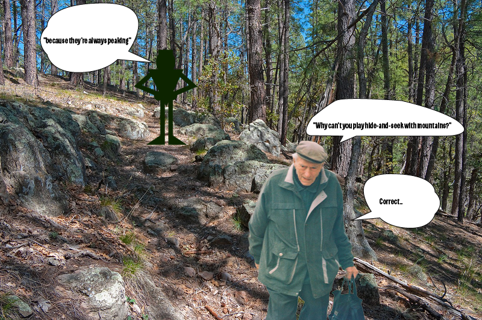

Jordan meets an old man that tells him a riddle and he has to figure it out before he can continue his journey.
Click here to hike to the top of the mountain
Credits: Photo made by Matthew Peralta, sound from https://www.bensound.com/royalty-free-music/track/psychedelic
"Praktica MTL 5 + Pentacon Electric 4/200 MC - Old Man" by Kojotisko is marked with CC0 1.0 
 .
.
"Secret Mountain Trail" by deborah.soltesz is marked with CC0 1.0 
 .
.